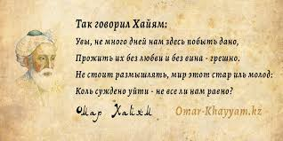

26 мудрых выводов о жизни от обычных людей
Хотите знать, что говорят о жизни такие же люди, как мы с вами? А может быть, хотите поделиться своими выводами и наблюдениями? Тогда эта статья именно для вас.
Мы привыкли, что мудрые мысли высказывают признанные писатели, учёные, большие политики или великие артисты. Однако право на собственные открытия имеют все люди, независимо от своего статуса и социального положения. Иногда в голове простого крестьянина содержится куда больше мудрости, чем в десятке успешных звёзд или деятелей бизнеса. В конце концов, все мы проживаем примерно одинаковые жизни, только на разных уровнях. И открытия делаем примерно одинаковые. Чтобы ещё раз доказать это, писатель и журналист Брианна Вист (Brianna Wiest) попросила поделиться своими самыми большими жизненными открытиями несколько десятков совершенно простых людей. И вот что она услышала.
Вы согласны?
- Я не могу изменить мир, но я могу изменить своё отношение к нему.
- Я не обязан ни перед кем извиняться за несогласие с ними.
- Вы сможете иметь всё, что захотите, только не сразу. И если вы считаете, что это печально, то представьте, что вы в один момент получили исполнение всех своих желаний. Вот это и есть печаль.
- Вы можете выбрать свою семью. Вы можете выбрать религию. Вы можете выбрать, каким человеком хотите быть сегодня и стать завтра. Однако вы никогда не сможете стать удобным и понятным для всех без исключения.
- Все вокруг — это просто проекция меня. Если я хочу изменить что-либо, то прежде всего нужно изменить себя.
-
Свобода — это состояние души.
- Ничто в нашей жизни не вечно. Но часто мы забываем об этом и не спешим наслаждаться тем, что имеем.
- Кроме возвышенной любви, существуют ещё десятки её разновидностей. Кроме счастья, есть ещё множество других не менее захватывающих человеческих чувств. Несовпадение с шаблонным идеалом не означает провала. Жизнь вообще разная.
- Мы не запоминаем года. Мы запоминаем моменты.
- Я не должен быть кем-то ещё, кроме себя настоящего.
- Никто не оплакивает на похоронах красивое лицо или одежду ушедшего. Все вспоминают его личность и душу. Не забывайте ни на секунду, что является действительно важным в человеке.
- Люди не полюбят тебя на основе всестороннего анализа твоих сильных и слабых сторон. Далеко не всегда самые красивые или самые богатые одновременно являются самыми любимыми. Помни об этом каждый раз, когда тебе покажется, что причина одиночества кроется в форме твоего носа или величине банковского счёта.
- Для того чтобы успешно преодолевать препятствия, важно всегда помнить, что каждое событие имеет свою причину. Устраняя последствия, не забывайте о причине.
- То, что сегодня кажется событием всей вашей жизни, завтра даже и не вспомнится. Зато простые малозначительные детали быта будут всплывать в памяти не один год.
- Всегда существует возможность найти новую работу, переехать в город своей мечты, обрести любовь. Главное — не отворачиваться от этих возможностей, когда жизнь в очередной раз будет тыкать в них носом.
- Худшие события в нашей жизни на самом деле являются просто уроками, которые предостерегают нас от настоящих несчастий.
- Вы потерпите настоящее поражение только в тот момент, когда перестанете пытаться.
- Не воспринимайте всё так серьёзно. Во всяком случае до тех пор, пока вы ещё живы.
- Я не могу изменить окружающих. Настоящие изменения происходят только тогда, когда каждый человек делает именно то, что должен, а не показывает пальцем на недостатки, которые он видит в других.
- Мудрость состоит в осознании того, что никто не обладает окончательным знанием. Когда-то все считали, что Земля плоская, сегодня говорят, что круглая, а кто может предсказать, что они придумают завтра?
- Даже если вы отказываетесь от веры, надежды и любви, они не покидают вас.
- Когда вы входите в библиотеку, все знания мира лежат перед вами. Когда вы просыпаетесь утром, то вам открывается целая вселенная. Важно помнить про это, а не видеть просто полки с книгами и ещё один обычный день.
- Настоящее счастье скрывается в мелочах. В хорошей книге, свежих овощах, тёплой постели, прикосновении любимой. Про эти вещи как-то не очень принято говорить, но именно их и стоит ценить.
- Посмотрим на нашу жизнь с пессимистической точки зрения. Через сотню лет о вас точно никто не вспомнит и не будет обсуждать ваши решения. Так чего мы боимся жить той жизнью, которой хотим?
- Я не должен быть тем, кем ожидают меня увидеть другие люди. В конце концов, им-то откуда знать, каким мне лучше быть?
- Мы находимся в плену именно у тех людей или вещей, которыми хотим обладать сами. Свобода заключается в отказе от желания владеть чем-либо.
Какие цитаты близки вам по духу?
А какие выводы сделали из пройденного жизненного пути наши читатели? Поделитесь?
